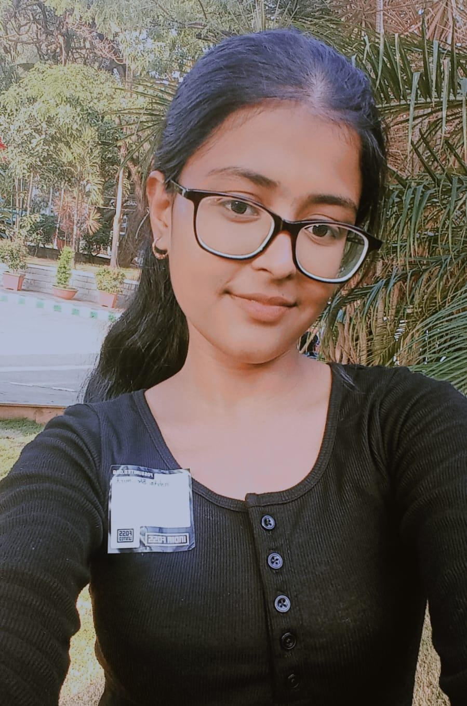
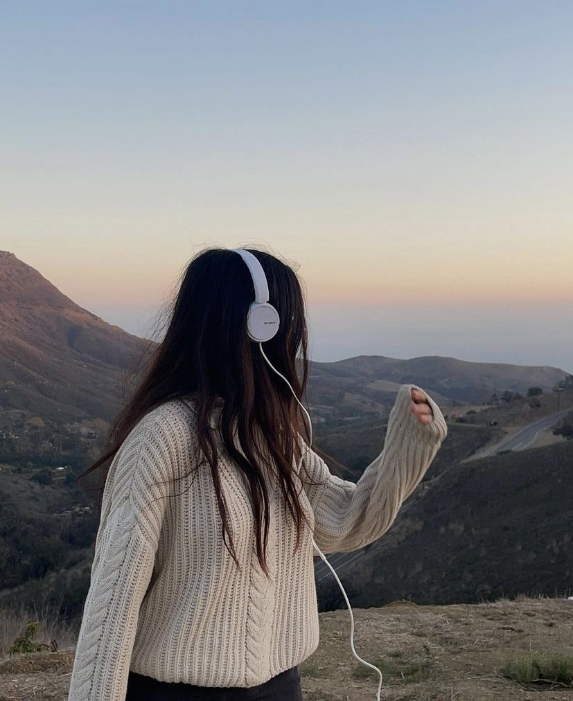
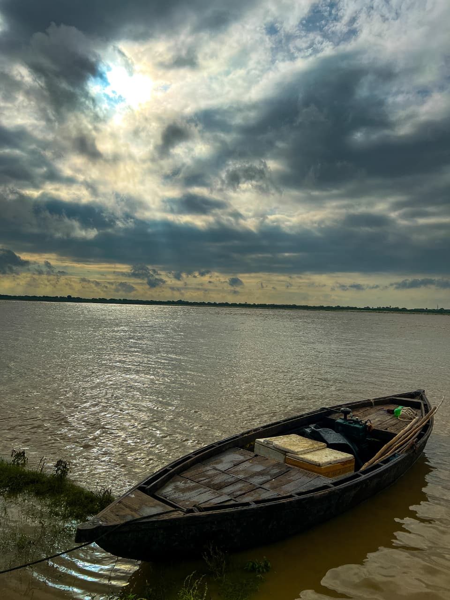
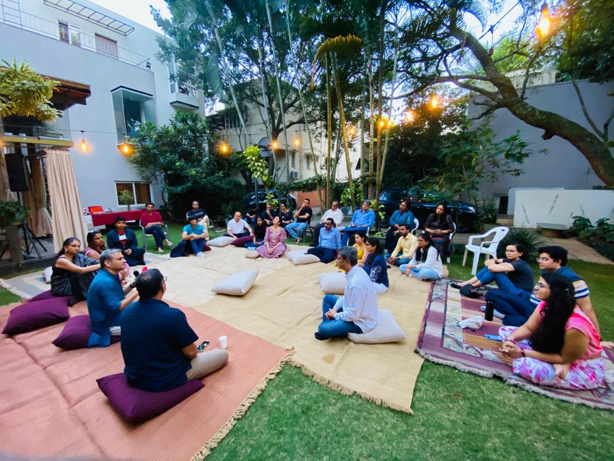
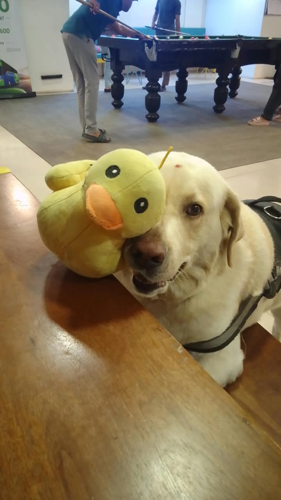
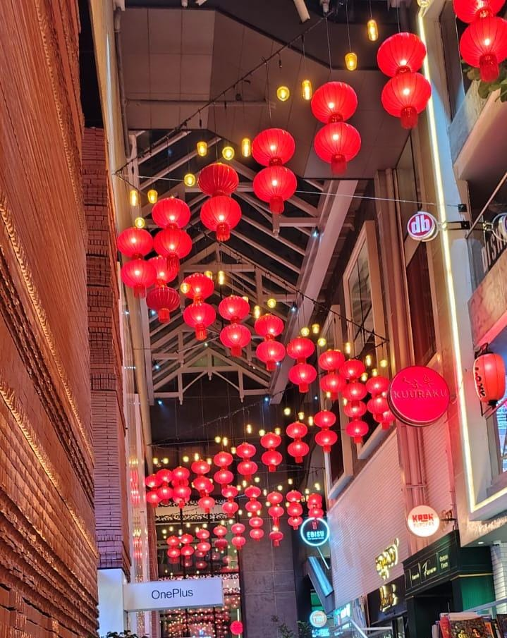
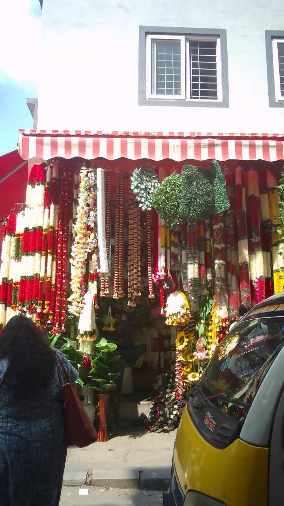
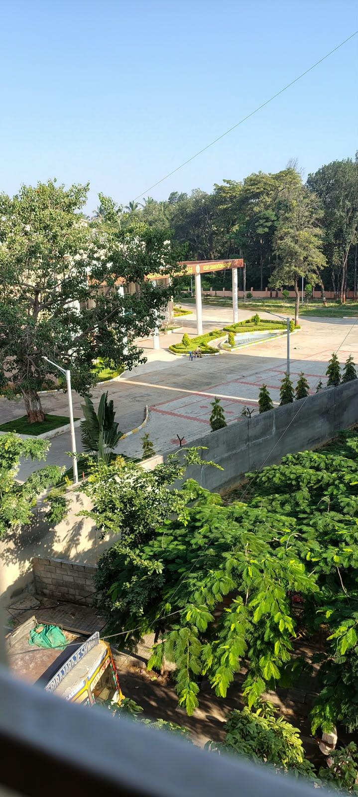

Hello, nice to meet you
I’m Yashika, a curious learner exploring science, technology and new ideas.
aspiring software developer who loves dancing
I’m a Biology student and software programming learner who enjoys exploring how things work, learning new technologies, solving problems and turning ideas into something meaningful.

3projects built
2live demos online
50+students supported
10 monthas a student coordinator
get to know me
About me
I am currently pursuing a B.Sc. in Biology and learning software programming at NavGurukul. I am curious about the world around me, especially nature, science, and understanding how things work. Alongside my studies, I enjoy exploring different areas of learning and discovering new interests.
As a student at NavGurukul, I took on additional responsibilities by serving as a Programming Coordinator and a Life Skills Coordinator. In these roles, I supported fellow students in their programming journey, encouraged collaborative learning, and organized English activities to help students practise communication in a comfortable environment. Taking on these responsibilities, meeting new people, and being part of different activities taught me teamwork, patience, empathy, and leadership. These experiences also helped me become more confident, take initiative, and understand different perspectives.
Alongside this, I am exploring software development, learning Python, and building practical projects. Beyond academics and coding, I enjoy dancing, listening to music, travelling, spending time in nature, and going on adventures. I love exploring new things and making memories through different experiences.
beyond the everyday
A little world of mine ✿
Things that make my days a little more special.

Dancing & music ♫
Little adventures ↗
Always exploring ✿

Making memories ♡my toolkit
Skills and technologies
Technologies I've explored, used in projects, and am continuing to learn.
Web development
Databases
Tools
Soft Skills
what I’ve built
Featured projects
Each one taught me something new. Here’s what they do.
project 01
AI Resume Checker
A web app built with Python and Flask that uses Gemini AI to analyze resumes and give feedback, so users can see their strengths and what to improve.
Key features: user authentication, PDF and DOCX resume extraction, AI-powered analysis, and a dashboard for previous reports.
project 02
Python Phone System Simulation
A menu-driven console app I built on my own to practise object-oriented programming by simulating basic smartphone functions.
Key features: phone lock and unlock, brightness control, mobile data, camera, messaging, contact calling, gallery access, and exception handling.

project 03
Django Learning Log
A web app where registered users create topics and keep their own entries, with authentication and user-specific access.
Key features: user registration and login, topic management, entry creation, and access control.

project 04 · academic presentation
GIS and Other Technologies in Forest
A Zoology presentation created using Gamma, exploring how technologies like GIS, remote sensing, GPS, drones, and AI are used in forest monitoring and wildlife conservation.
my academic journey
Education
What I’m studying and the areas I’m exploring.
2025 – present
Diploma in Software Programming
NavGurukul, Raigarh (C.G.)
Learning programming and software development, including Python.
currently pursuing
B.Sc. in Biology
Govt. Arts, Science and Commerce College, Dharamjaigarh, Raigarh
Shaheed Nandkumar Patel Vishwavidyalaya (SNPV), Raigarh (C.G.)
5th semester · currently pursuing
contributing and learning
Volunteer & Leadership Experience
Taking responsibility, supporting others, and learning through community involvement.
Oct 2025 – Feb 2026
Programming Coordinator (Student)
NavGurukul
Supported 50+ students in their programming journey by helping resolve doubts, guiding their learning, and encouraging collaborative learning.
Mar 2026 – Jul 2026
Life Skills Coordinator (Student)
NavGurukul
Organized English activities for 50+ students and helped create a comfortable environment where they could practise communication and build confidence.
away from the screen
Things I like to do
The quiet things that keep me balanced and curious.
Dancing
Dancing makes me feel happy, energetic, and free. I also love listening to music because it instantly lifts my mood and makes everything feel better.
Travelling
I love exploring new places, learning about their lifestyles, cultures, food, and people. Every new place gives me something different to discover.
Learning new things
I enjoy learning new things because every experience teaches me something different and gives me something new to try. I love the feeling of discovering and improving myself.
Trying new experiences
I like stepping out of my comfort zone and trying things I haven't done before. New experiences help me discover more about myself and make beautiful memories.
Small moments




let’s connect
Say hello
Thank you for visiting my portfolio. If you’d like to connect or share an opportunity, I’d be happy to hear from you.